Projekte
GIS-, Raumanalyse- und Kartografieprojekte zu Erreichbarkeit, Mobilität, ÖPNV und Geoprozessierung.
Webentwicklungs-Projekte
JavaScript- und HTML/CSS-Projekte, veröffentlicht über GitHub und Netlify.
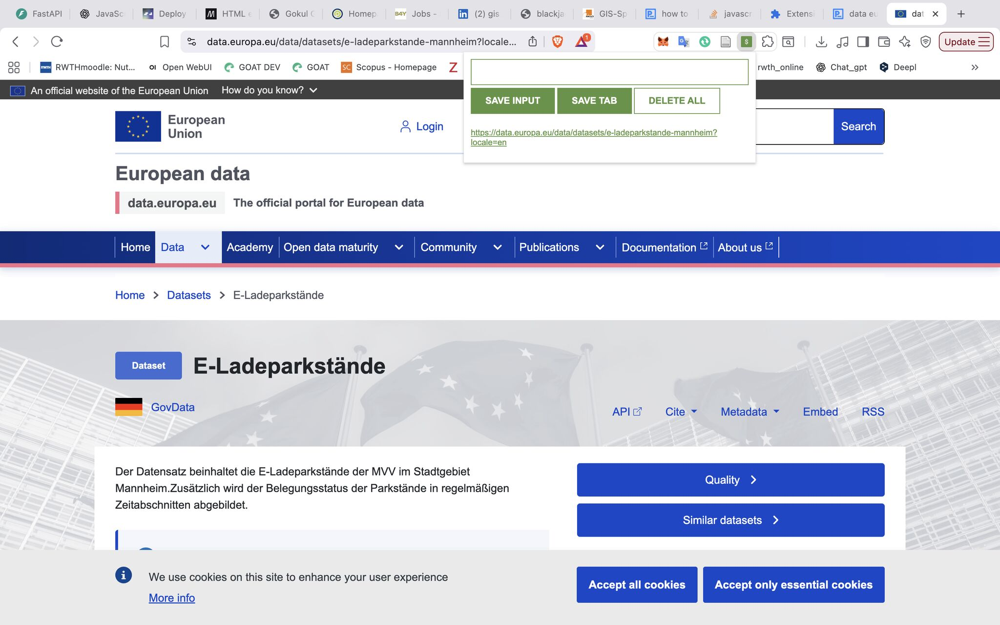
Leads Tracker App
JavaScript-App zum Speichern und Verwalten nützlicher URLs, veröffentlicht als Live-Netlify-Deployment über GitHub.

Blackjack-Spiel
Browser-basiertes Blackjack-Spiel mit Fokus auf JavaScript-Logik, Punktestand, UI-Zustand und Netlify-Deployment.

Scoreboard
Einfache Anzeigetafel-App mit Live-Punktesteuerung, gehostet als Netlify-Site über GitHub.

Fahrgastzähler
Fahrgastzähler-App für Münchner U-Bahn-Anwendungsfälle, mit JavaScript entwickelt und auf Netlify bereitgestellt.

Digitale Visitenkarte
Kompakte persönliche Visitenkarte als Webseite — Übung in responsivem HTML/CSS und Netlify-Deployment.
Plan4Better Projekte
Erreichbarkeits-, Mobilitäts- und GOAT-basierte Planungsarbeit aus dem Plan4Better-Umfeld.
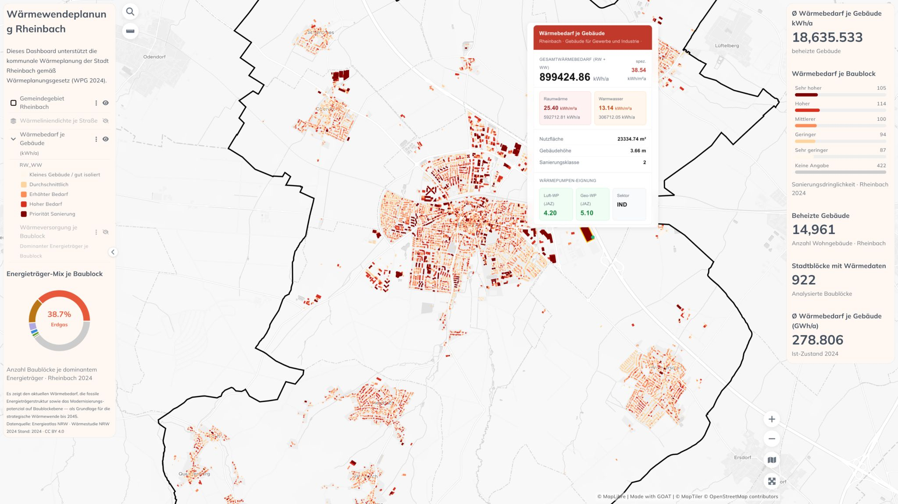
Rheinbach Kommunale Wärmeplanung
GOAT-Dashboard für die kommunale Wärmeplanung in Rheinbach, NRW — gebäudegenaue Wärmebedarfsanalyse, Gasabhängigkeit und Wärmepumpeneignung auf Basis von LANUV-Offendaten.
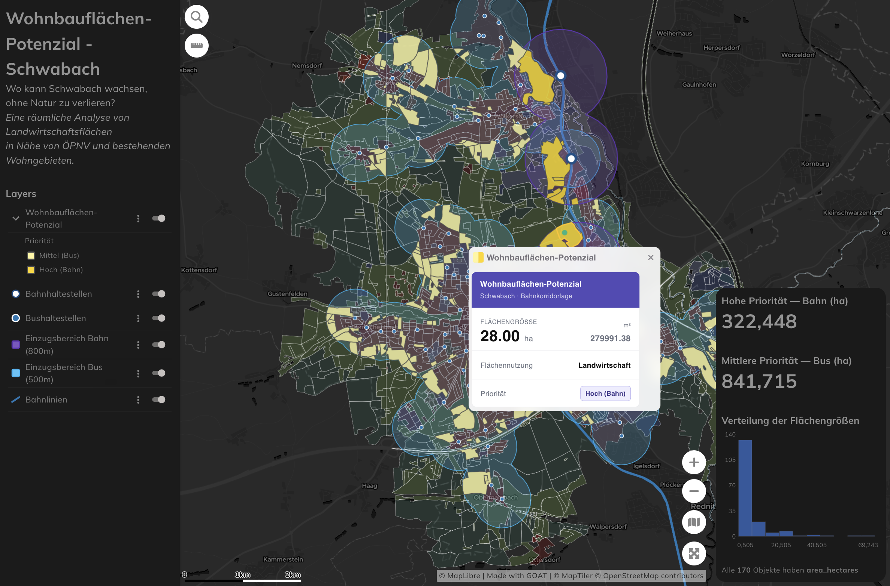
322 ha bebaubare Ackerflächen um Schwabach
Multikriterielle Raumanalyse zur Identifikation ÖPNV-erschlossener, wohnraumnaher Ackerflächen in Schwabach — auf Basis von ALKIS, GTFS und OSM in GOAT.

München — Erreichbarkeit von Trinkbrunnen
Netzwerkbasierte Einzugsbereiche, Landoberflächentemperatur und Bevölkerungsdaten in GOAT — 299 Prioritätszonen für neue Trinkwasserinfrastruktur in München.

Hannover — Erreichbarkeit von Ladesäulen
Gebäudegenaue Fußweganalyse zu 1.049 öffentlichen Ladesäulen in Hannover — 92 % der Wohngebäude innerhalb von 10 Gehminuten, 6.686 ohne Fußwegverbindung.
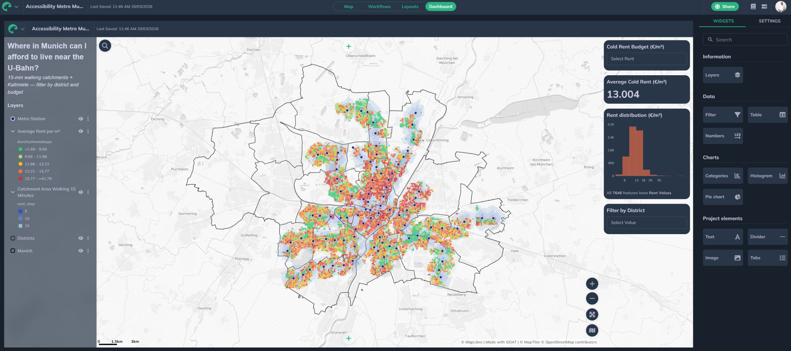
Münchner Wohnstandorterreichbarkeit
Dashboard zur Verknüpfung von Mietpreisindikatoren mit ÖPNV-Erreichbarkeitsdaten für Münchner Stadtgebiete.

Köln — Supermarkterreichbarkeit
H3-Hexagongitter-Karte der Fußwegerreichbarkeit zu Supermärkten in Köln mit dem Closest-Average-Indikator in GOAT.
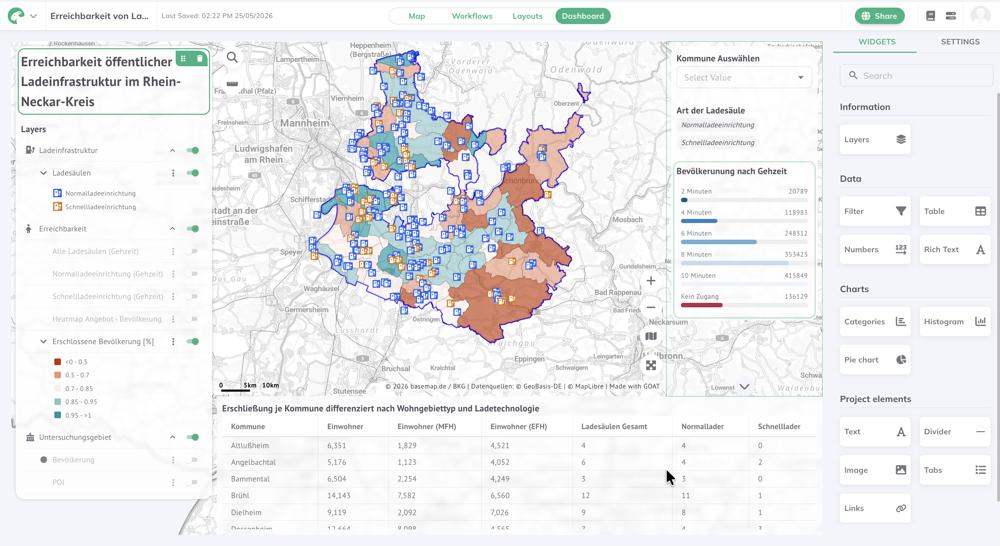
Rhein-Neckar — Ladeinfrastruktur
Interaktives GOAT-Dashboard zur Fußwegerreichbarkeit öffentlicher Ladesäulen im Rhein-Neckar-Kreis — differenziert nach Ladetyp und Gebäudetyp (MFH/EFH).
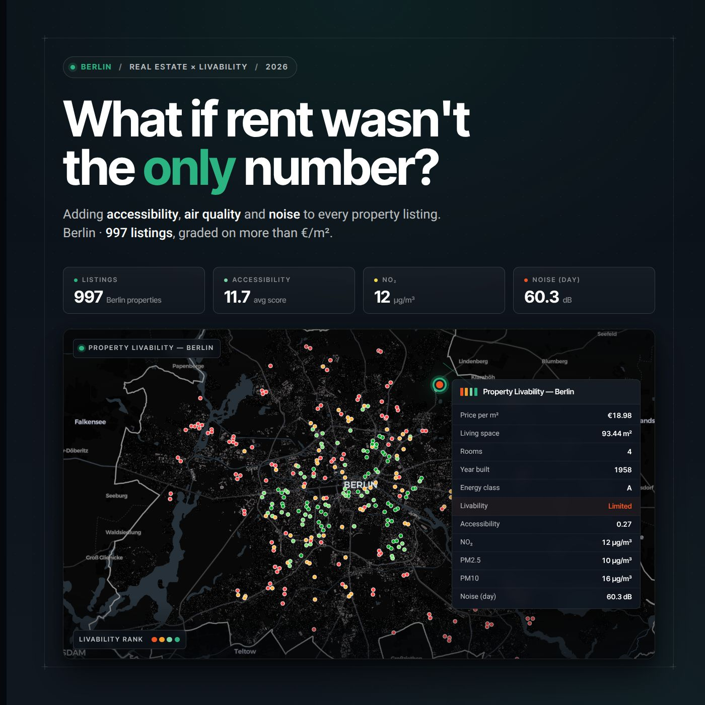
Berlin — Mietmarkt: Erreichbarkeit & Umwelt
Anreicherung von ~1.000 synthetischen Berliner Inseraten mit gravitationsbasiertem Erreichbarkeitsscore und Umweltdaten (NO₂, PM10, Lärm) via GOAT.
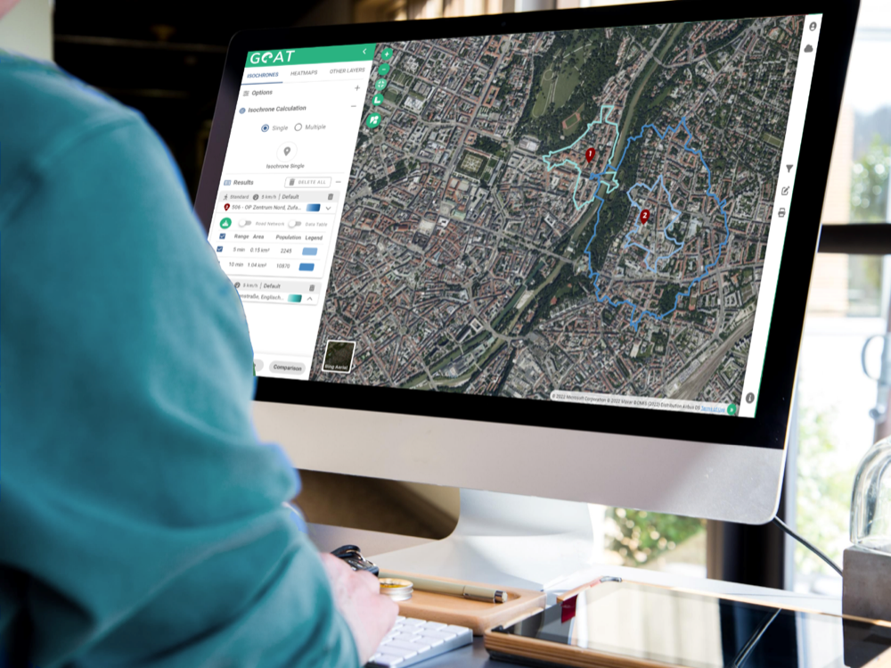
Plan4Better — Pflichtpraktikum
GIS-Praktikum bei Plan4Better — Erreichbarkeits-, Walkability- und ÖPNV-Analysen für deutsche Städte mit GOAT.
Raumanalyse-Projekte
GIS-, Kartografie-, ÖPNV-, Mobilitäts- und Geoprozessierungsprojekte außerhalb des Plan4Better-Bereichs.

Fahrradsicherheit in New York City
Prioritätsanalyse für Fahrraddistrikte in Brooklyn und Queens — Kombination aus Radnetz und Straßennetzkontext.

Berlin — GTFS & Rollstuhlgerechtigkeit im ÖPNV
GTFS-basierte Visualisierung der Berliner Haltestellendichte und rollstuhlgerechter Haltestellen-Cluster.
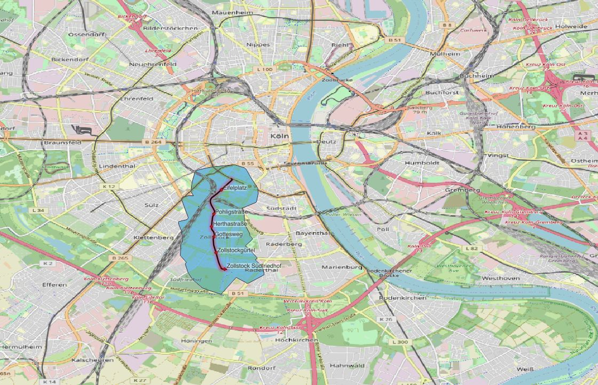
Köln — Straßenbahn-Isochronen
Netzwerkbasierte Isochronenanalyse der realen Fahrzeit-Einzugsbereiche von Kölner Straßenbahnhaltestellen.
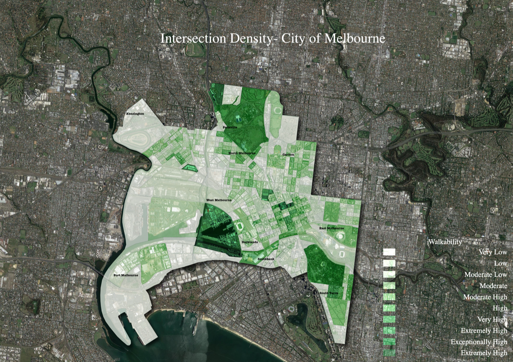
Melbourne — Walkability & Kreuzungsdichte
Kreuzungsdichteanalyse für Melbourne auf Basis von Fußwegenetz und CLUE-Flächennutzungsdaten.

Kapstadt — Walkability-Index
QGIS-basierter Walkability-Index für Kapstadt, entwickelt im Kurs Mobilitätsforschung und Verkehrsmodellierung an der RWTH Aachen.

30 Day Map Challenge 2023 & 2025
Karten aus dem #30DayMapChallenge 2023 und 2025 — vielfältige Themen, Techniken und Regionen.
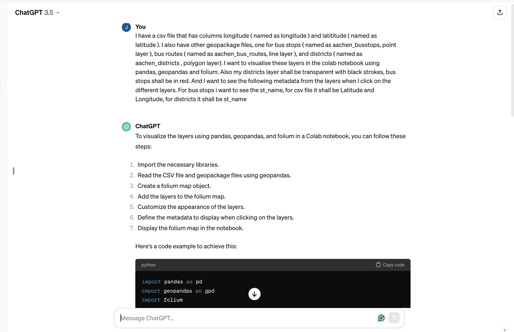
Python Raumanalyse — Bushaltestellen
Python-basierte Raumanalyse der Bushaltestellen-Abdeckung mit GeoPandas und OSM-Daten.
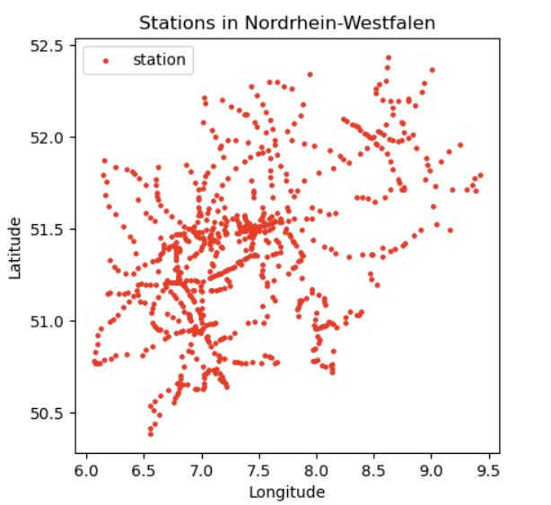
NRW Bahnhöfe — Python & Deutsche Bahn API
Abruf von Bahnhofsdaten über die Deutsche Bahn WEB API und Visualisierung mit GeoPandas und Pandas.

Kapstadt — Standortoptimierung Abfallentsorgung
Standortoptimierungsmodellierung zur Optimierung der Platzierung von Abfallanlagen in Kapstadt mittels Netzwerkanalyse.
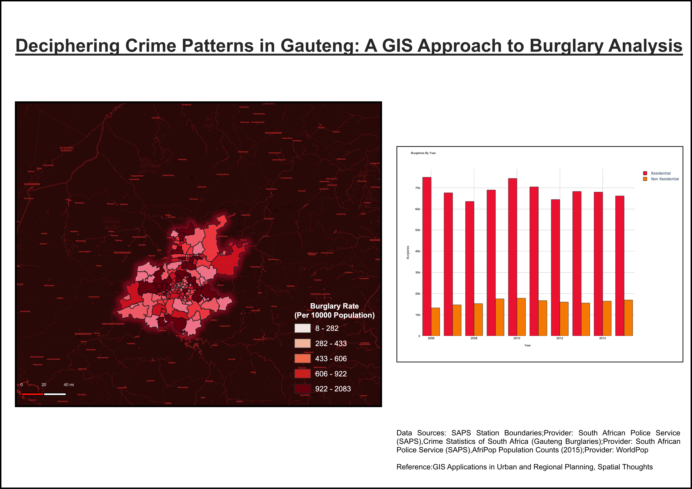
Einbruchsrate in Gauteng
Kriminalitätskartierung je 10.000 Einwohner mit SAPS-Statistiken, AfriPop-Bevölkerungsdaten und QGIS-Zonenstatistik.

Stadtplanung Pufferanalyse — San Francisco
Pufferzonen um institutionelle Flächennutzungsbereiche in San Francisco mit GeoPandas und Matplotlib.

Berlin — Straßenbahn-Erreichbarkeit
Erreichbarkeitsanalyse des Berliner Straßenbahnnetzes — Bevölkerungsabdeckung im Fußwegeinzugsbereich von Haltestellen.
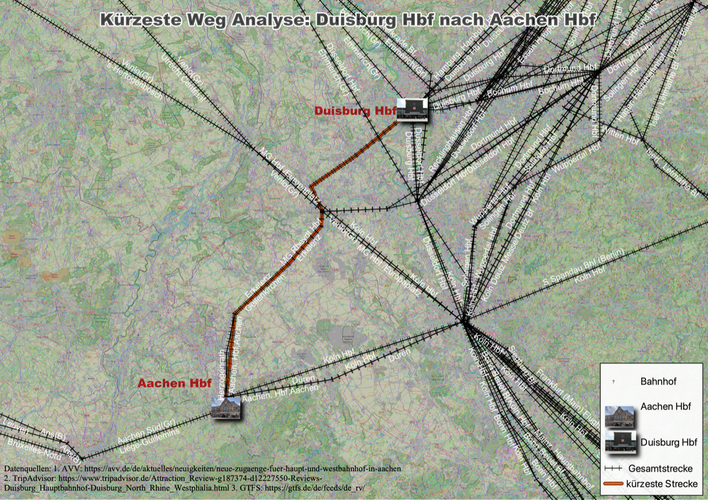
GTFS-Analyse — Duisburg nach Aachen
Verarbeitung und Visualisierung von GTFS-Feed-Daten zur Analyse der ÖPNV-Verbindungen zwischen Duisburg und Aachen.

Schule-Hochschule Näheanalyse — Kerala
Näheanalyse zwischen Schulen und nächstgelegenen Hochschulen innerhalb von Verwaltungsregionen Keralas mit QGIS-Ausdrücken.

München — Minimalistisches Straßennetz
Tag 14 des #30DayMapChallenge — minimalistische Karte des Münchner Straßennetzes aus reinen OpenStreetMap-Daten via GOAT.
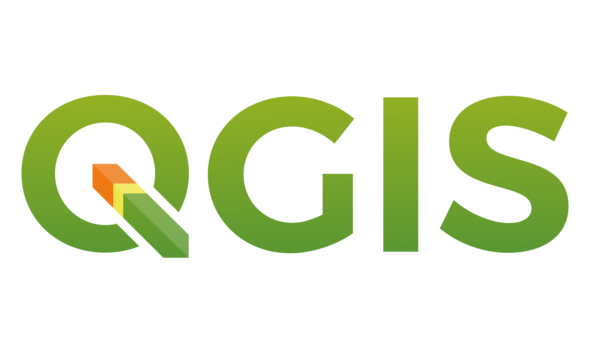
QGIS Tipps & Tricks
Sammlung von QGIS-Workflow-Beiträgen, direkt auf LinkedIn verlinkt.
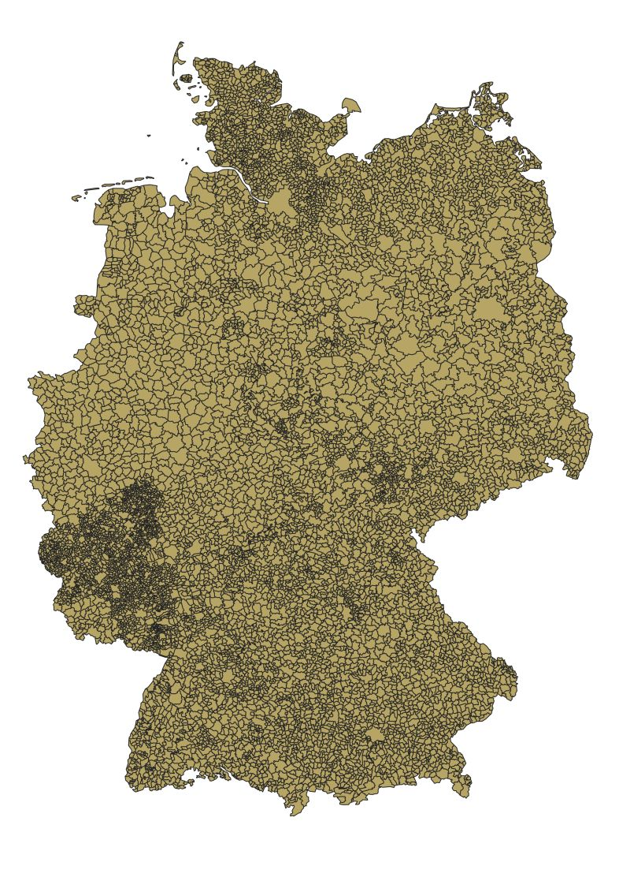
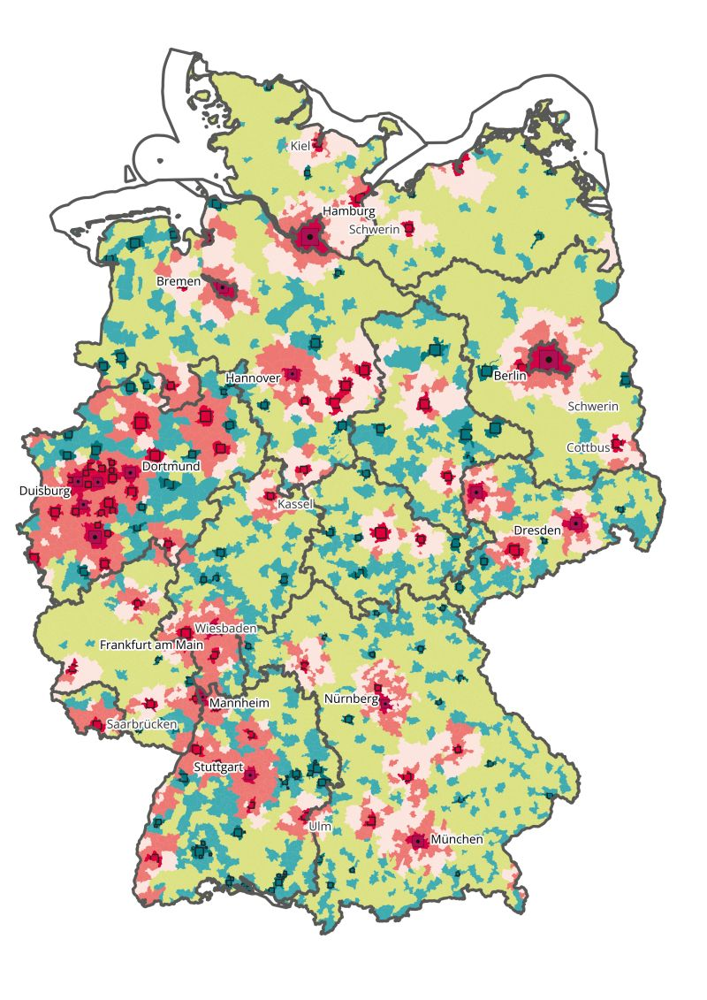
QGIS Geometry Generator — RegioStar
Benutzerdefinierte QGIS-Geometry-Generator-Ausdrücke zur Visualisierung von RegioStar-Regionalklassifikationsdaten.

QGIS Actions — Nachbarsuche
Benutzerdefinierte QGIS-Actions für interaktive Nachbarsuchen und räumliche Abfragen direkt aus dem Kartenfenster.